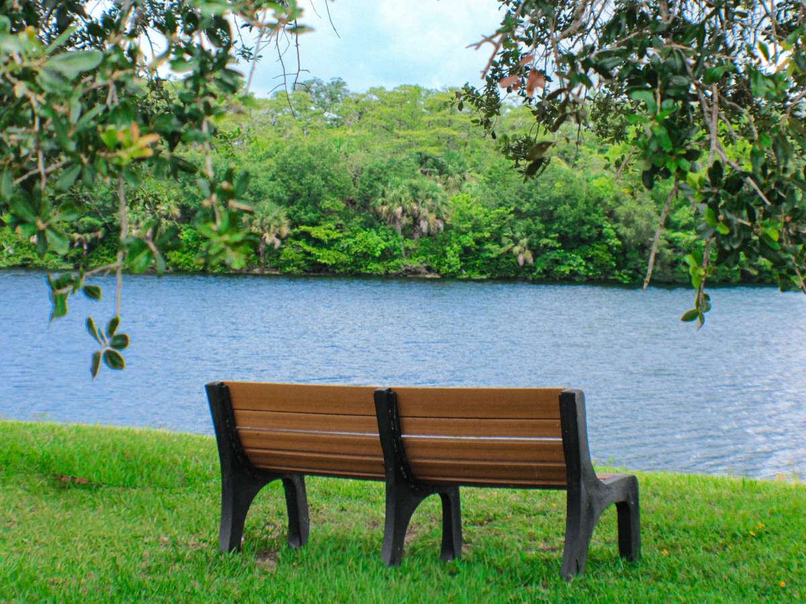
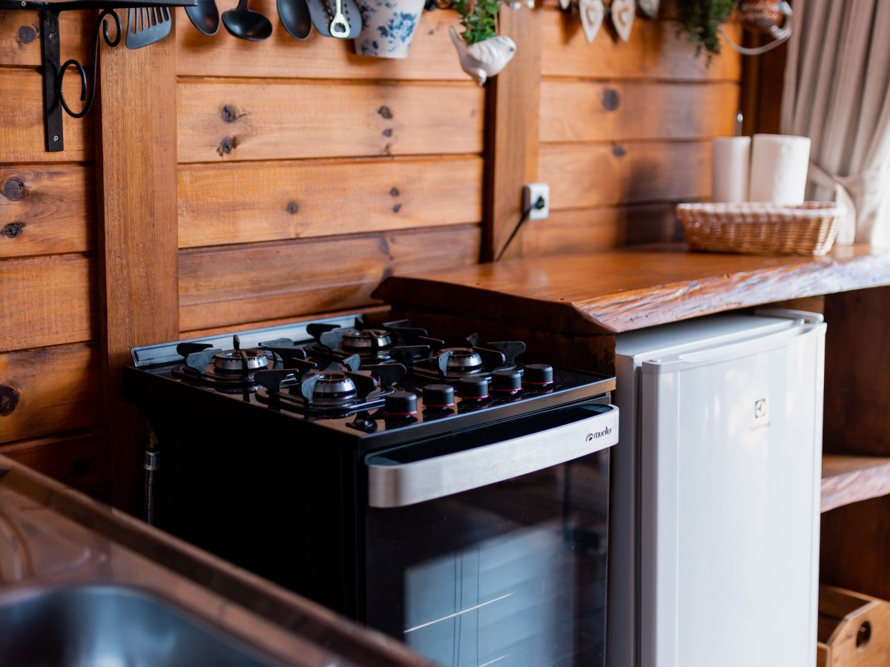
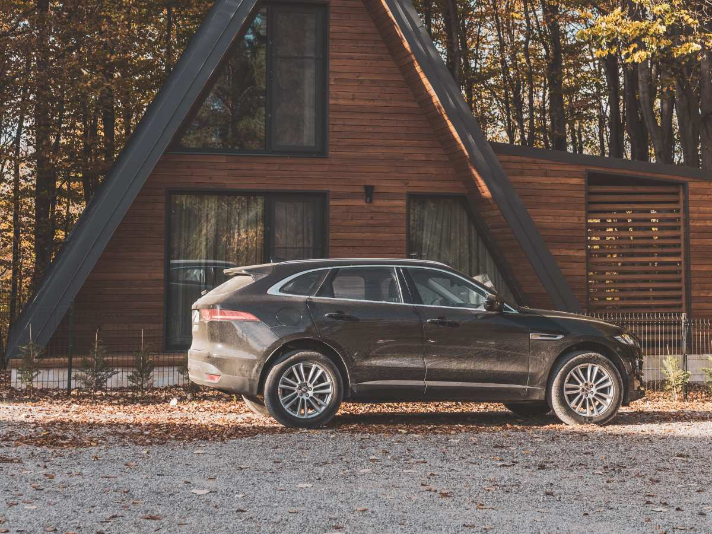
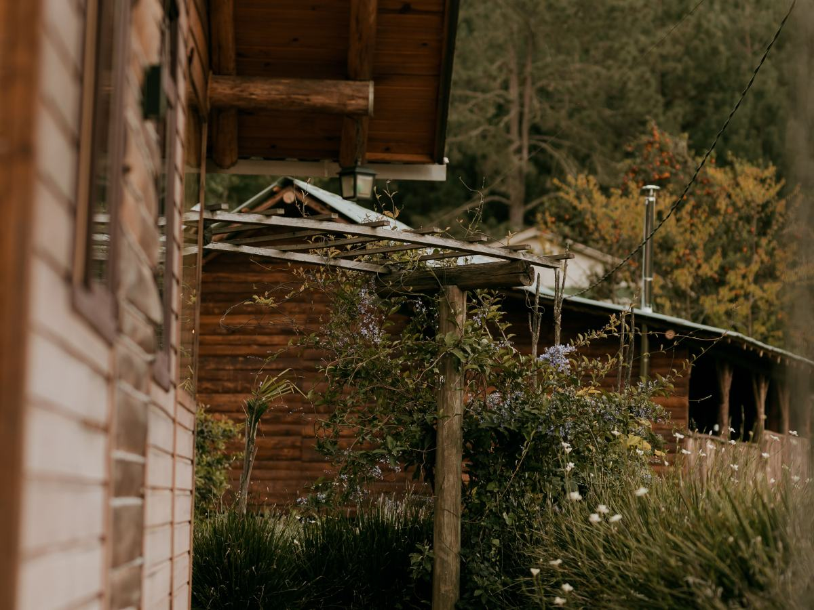
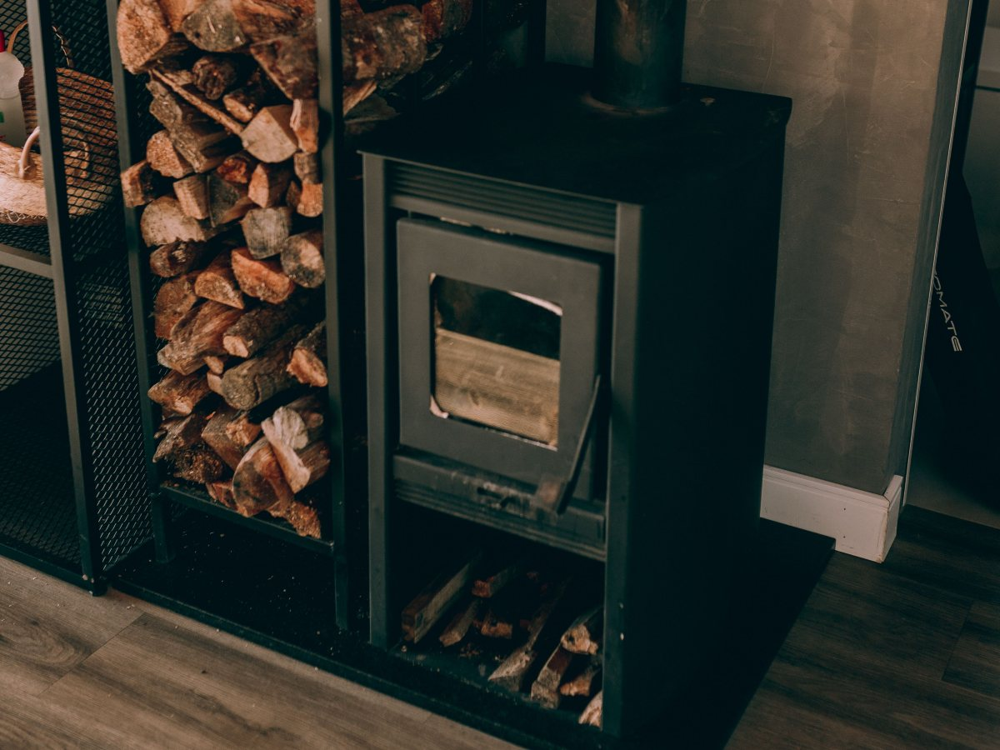
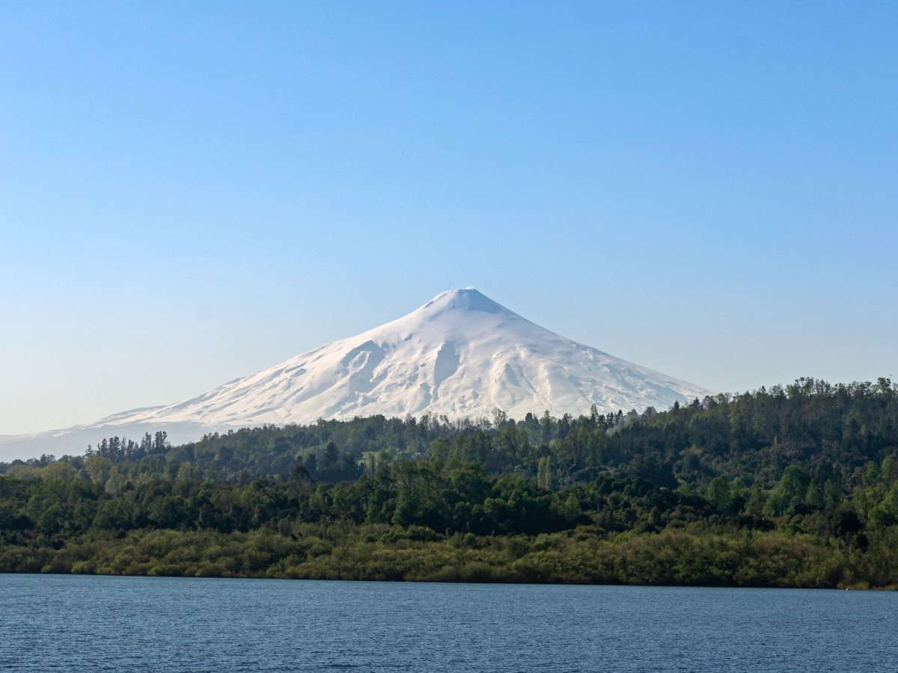
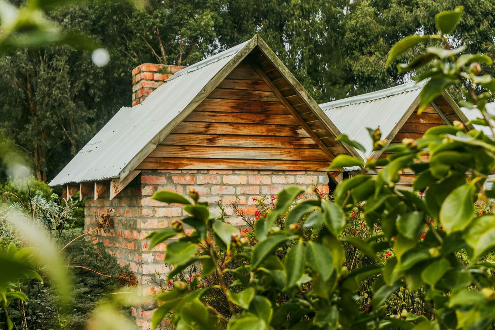
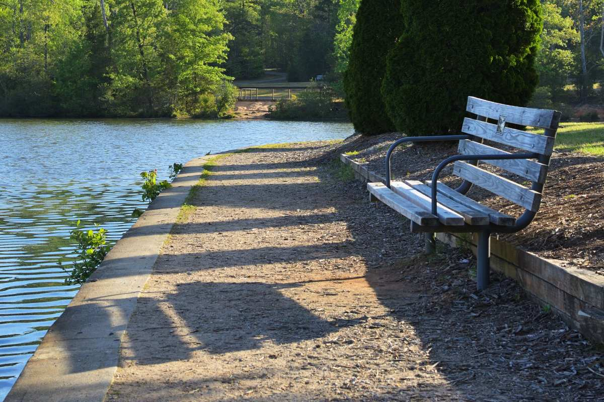
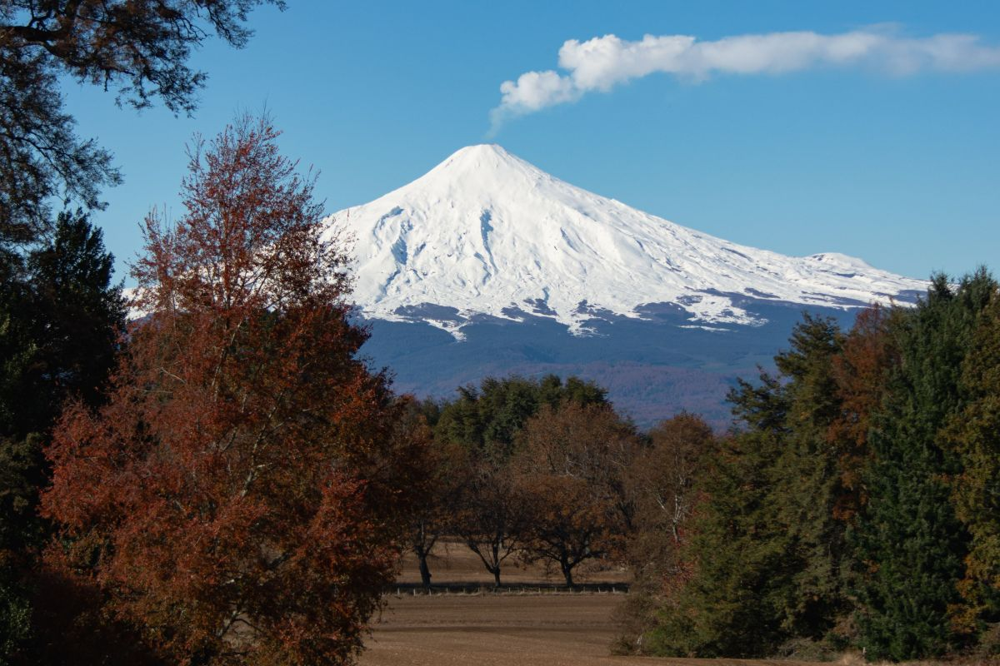
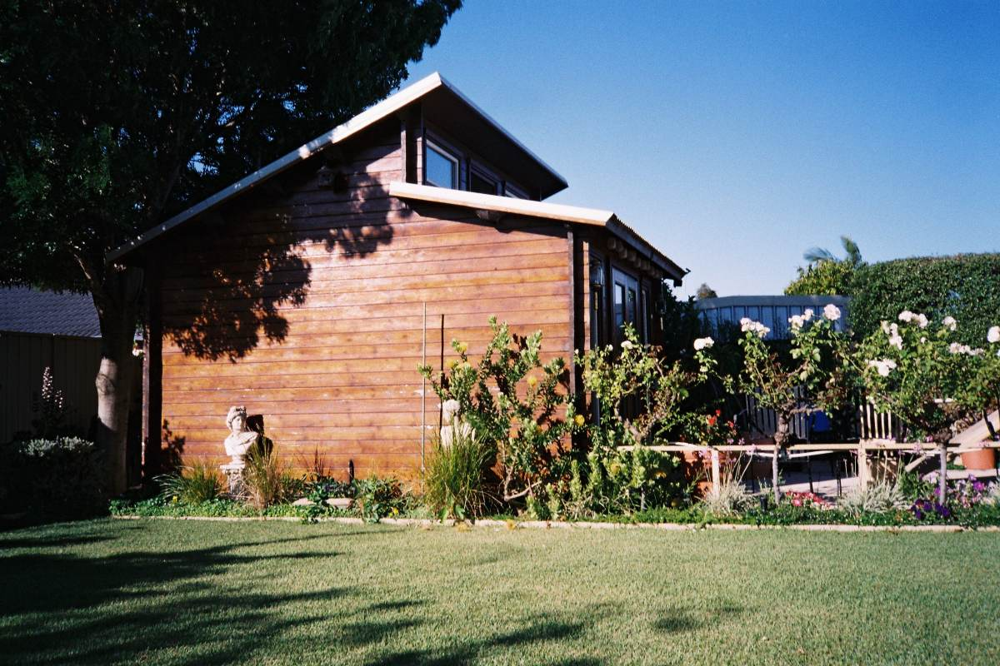

Villarrica · General Körner 442
A dos cuadras del lago.
Cabañas con cocina en pleno Villarrica, sin sacar el auto.
- 157reseñas en Google
- 9de 10 en portales de viaje
- 2cuadras al lago y al centro
- 0páginas propias o redes encontradas
Antes de llegar
¿Hace falta el auto?
Para lo de todos los días, no.
- A PIE
La costanera
A un par de cuadras de la cabaña.
- A PIE
El centro
Almacenes y restaurantes cerca.
- ADENTRO
La cocina
Para no depender de salir a comer.
- AFUERA
El auto, guardado
Cada cabaña tiene su estacionamiento.
Distancias y servicios de sus fichas publicadas en portales de viaje.
Dejar el auto y bajar al lago.
En General Körner 442
Lo que hay en El Arrayán
-

Lo que las distingue
La ubicación
Cerca del lago y del centro.
-

Para quedarse
Cabañas equipadas
Con cocina propia.
-

Al llegar
Estacionamiento
Uno por cabaña.
-

Sin escalones
Entrada accesible
Para sillas de ruedas.
-

En invierno
Calefacción
Para las noches frías del sur.
-

A dos cuadras
Lago Villarrica
Playa y costanera.
Ubicación, cocina, estacionamiento, acceso y calefacción salen de sus fichas publicadas.
Nueve de diez, en 262 opiniones.
Destacan la atención y el orden
Flor, madera y lago
Unos días en Villarrica




Fotos de referencia: ninguna es de las cabañas.
Dónde estamos
General Körner 442, Villarrica
- Dirección
- General Körner 442
- Teléfono
- (45) 241 1235
- Horario de llegada
- Falta el horario de llegada
El teléfono es fijo: se reserva llamando o por correo.
General Körner 442, Villarrica Abrir en Google Maps
Para el dueño
Qué es real y qué falta
Lo verificado
Dirección, teléfono y correo de Sernatur, los servicios de sus fichas y las 157 reseñas.
Lo de ejemplo
Las fotos: ninguna es de las cabañas.
Lo que falta
Cuántas cabañas hay, para cuántas personas, los valores y un celular con WhatsApp.